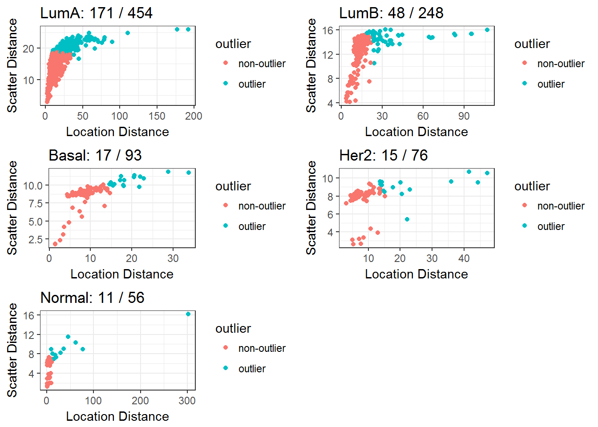

METABRIC Discovery Data Set
Christopher Conley, Pei Wang, Umut Ozbek, Jie Peng
2017-05-21
The following analysis documents how we organize the METABRIC discovery data set into a standard Biobase::ExpressionSet format before input into the spaceMap model. The goal of this analysis is to ultimately fit the spaceMap model to infer a network encoding how copy number alteration (CNA) intervals impact RNA expression in breast cancer subtypes. Below we outline the data processing steps of this document in preparation for model fitting.
- Copy number alteration (CNA) ExpressionSet
- Import result of Fixed-order clustering result which aggregates CNA into larger genomic intervals.
- Reduce the redundacy of cytoband alias for each CNA feature.
- Import clinical data and PAM50 molecular subtype information.
- Reformat existing CNA annotation into an ExpressionSet.
- Divide CNA data samples by PAM50 molecular subtypes into 5 ExpressionSet objects.
- mRNA expression ExpressionSet
- Import discovery data set and filter out probes with poor quality.
- Filter out probes by subtype with median absolute deviation across samples below the 93% percentile.
- Assure filtering probes by subtype still has sufficient overlap of probes between subtypes.
- Gather gene locations of mRNA probes.
- Divide mRNA data samples by each PAM50 subtype into 5 ExpressionSet objects.
- Extreme Outlier Removal
- Identify outlying samples in mRNA and CNA ExpressionSets (by subtype) with PCout algorithm.
- Remove most extreme outlying samples.
- Highly Correlated Features
- Validate mRNA has no ultra-high correlation among mRNA probes.
- Resolve ultra-high correlation among CNA events.
- Partition samples for cross validation.
Copy Number Alteration (CNA) data
The aCGH data containing the CNA features was reported by the METABRIC authors in several formats. Experience of Pei Wang’s group at Mount Sinai has found the segmentation format, rather than gene-level summaries, to be better input to our analysis pipeline. Specifically, Umut Ozbek input the CBS-based segmentation data into the Fixed-Order clustering altorithm to further aggregate and call CNA features.
The raw data for this project is currently stored locally to keep the file size down.
discdir <- "~/scratch-data/neta-metabric/disc-data/"We will store the intermediate filtered data here:
filterdir <- "~/scratch-data/neta-metabric/disc-filtered/"We now import and validate the data.
cna0 <- new.env()
load(envir = cna0, file = file.path(discdir, "Metabric_CNA_FOC160322_2K.Rdata"))The Fixed-order clustering algorithm determined 2380 CNA intervals in the discovery data set . As seen in the following object, there are 997 samples that have METABRIC sample ID’s in the column names and the CNA intervals are contained in the rows.
str(cna0$CNA.FOC.data.new)## num [1:2380, 1:997] 0.0593 0.0593 0.0593 0.0593 -0.204 ...
## - attr(*, "dimnames")=List of 2
## ..$ : NULL
## ..$ : chr [1:997] "MB-0135" "MB-0167" "MB-0136" "MB-3403" ...The specific gene coordinates of these 2380 CNA intervals are reported as well (see next object).
#assure equal dimension
stopifnot(nrow(cna0$CNA.FOC.loca.new) == nrow(cna0$CNA.FOC.data.new))
kable(head(cna0$CNA.FOC.loca.new))| ch.interval.iter2 | begin.nuc.iter2 | end.nuc.iter2 | size.iter2 |
|---|---|---|---|
| 1 | 593454 | 615334 | 2 |
| 1 | 814000 | 993492 | 10 |
| 1 | 1008567 | 1500664 | 16 |
| 1 | 1618687 | 1642256 | 2 |
| 1 | 1727801 | 5561260 | 98 |
| 1 | 5666096 | 6428714 | 18 |
Cytoband redundancy
The cytoband information is reported in the following object:
stopifnot(length(cna0$CNA.FOC.n.new) == nrow(cna0$CNA.FOC.data.new))
head(cna0$CNA.FOC.n.new)## [1] "1p36.33-1p36.33" "1p36.33-1p36.33" "1p36.33-1p36.33" "1p36.33-1p36.33"
## [5] "1p36.33-1p36.31" "1p36.31-1p36.31"Notice there is a bit of redundancy in the cytoband intervals. Improve the cytoband information to be as non-redundant as possible through the following function.
nr_cytobands <- function(cb) {
split_cb <- unlist(strsplit(x = cb, split = "-"))
if(length(split_cb) != 2) {
return(cb)
}
split_cb2 <- unlist(strsplit(x = split_cb, split = "p|q"))
pq1 <- regmatches(split_cb[1], m= regexpr(pattern = "[pq]+", text = split_cb[1]))
pq2 <- regmatches(split_cb[2], m= regexpr(pattern = "[pq]+", text = split_cb[2]))
same_arm <- pq1 == pq2
chr1 <- split_cb2[1]
chr2 <- split_cb2[3]
same_chr <- chr1 == chr2
loc1 <- as.numeric(split_cb2[2])
loc2 <- as.numeric(split_cb2[4])
same_loc <- loc1 == loc2
if( same_chr & same_arm & same_loc) {
paste0(chr1, pq1, loc1)
} else if (same_chr & same_arm & !same_loc) {
paste0(chr1, pq1, min(loc1,loc2), "-", max(loc1,loc2))
} else if (same_chr & !same_arm & same_loc) {
paste0(chr1, pq1, loc1, "-", pq2, loc2)
} else if (same_chr & !same_arm & !same_loc) {
paste0(chr1, pq1, loc1, "-", chr2, pq2, loc2)
} else if (!same_chr) {
paste0(chr1, pq1, loc1, "-", chr2, pq2, loc2)
}
}
tmp <- data.frame(original = cna0$CNA.FOC.n.new,
nr = sapply(cna0$CNA.FOC.n.new, nr_cytobands))
nr_cytoband_ids <- as.character(tmp$nr)Inspection of the cytoband information reveals that the redundancy has been reduced.
kable(tmp[sample.int(n = nrow(tmp), size = 6),])| original | nr | |
|---|---|---|
| 2213 | 19q13.11-19q13.11 | 19q13.11 |
| 410 | 3p26.2-3p26.1 | 3p26.1-26.2 |
| 1631 | 12p11.21-12p11.1 | 12p11.1-11.21 |
| 165 | 2p22.3-2p22.2 | 2p22.2-22.3 |
| 529 | 3q22.1-3q22.1 | 3q22.1 |
| 1906 | 15q21.2-15q21.3 | 15q21.2-21.3 |
CNA ExpressionSet
Since the cytoband information is not unique we will form unique ID’s for the CNA features based on the gene coordinates.
cnapos <- cna0$CNA.FOC.loca.new[,c("ch.interval.iter2", "begin.nuc.iter2", "end.nuc.iter2")]
cnaids <- apply( cnapos, 1 , paste , collapse = "_" )
stopifnot(!anyDuplicated(cnaids))
head(cnaids)## [1] "1_593454_615334" "1_814000_993492" "1_1008567_1500664"
## [4] "1_1618687_1642256" "1_1727801_5561260" "1_5666096_6428714"Store the CNA attributes in a way that will be compatible with spacemap’s network analysis toolkit. The CNA attributes must have a unique feature ID, an alias that can be displayed in downstream visualizations, the genomic coordinates, as well a type attribute indicating that it is a predictor variable.
cna_node_attributes <- data.frame(id = cnaids,
alias = nr_cytoband_ids,
chr = paste0("chr", cnapos[,"ch.interval.iter2"]),
start = cnapos[,"begin.nuc.iter2"],
end = cnapos[,"end.nuc.iter2"],
stringsAsFactors = FALSE,
row.names = cnaids)
kable(head(cna_node_attributes), row.names = F)| id | alias | chr | start | end |
|---|---|---|---|---|
| 1_593454_615334 | 1p36.33 | chr1 | 593454 | 615334 |
| 1_814000_993492 | 1p36.33 | chr1 | 814000 | 993492 |
| 1_1008567_1500664 | 1p36.33 | chr1 | 1008567 | 1500664 |
| 1_1618687_1642256 | 1p36.33 | chr1 | 1618687 | 1642256 |
| 1_1727801_5561260 | 1p36.31-36.33 | chr1 | 1727801 | 5561260 |
| 1_5666096_6428714 | 1p36.31 | chr1 | 5666096 | 6428714 |
Now label the CNA features with their newly formed IDs in the assay data.
cna_assay <- cna0$CNA.FOC.data.new
rownames(cna_assay) <- cnaids
str(cna_assay)## num [1:2380, 1:997] 0.0593 0.0593 0.0593 0.0593 -0.204 ...
## - attr(*, "dimnames")=List of 2
## ..$ : chr [1:2380] "1_593454_615334" "1_814000_993492" "1_1008567_1500664" "1_1618687_1642256" ...
## ..$ : chr [1:997] "MB-0135" "MB-0167" "MB-0136" "MB-3403" ...Clinical data import
Import the clinical features associated with the discovery data set. This data also contains the PAM50 molecular subtype information.
suppressPackageStartupMessages(library(xlsx))
clinical <- read.csv(file = file.path(discdir, "Complete_METABRIC_Clinical_Features_Data.csv"))Organize the clinical variables for the discovery set. There are 2 samples of the 997 discovery set that have no clinical information available. We order the clinical variables according to the CNA sample IDs.
names(clinical)[1] <- "Metabric_ID"
#subset the discovery set
pheno_data <- clinical[clinical$Metabric_ID %in% colnames(cna_assay),]
#needs to be character vector for filling in missing sample ids
pheno_data$Metabric_ID <- as.character(pheno_data$Metabric_ID)
#identify sample ids without clinical features
missing_clinical <- colnames(cna_assay)[!(colnames(cna_assay) %in% clinical$Metabric_ID)]
#sort to match the order of the CNA assay data
pheno_data <- pheno_data[match(colnames(cna_assay),pheno_data$Metabric_ID),]
#fill in missing ids so can be included in Expression Set
pheno_data[which(is.na(pheno_data$Metabric_ID)),"Metabric_ID"] <- missing_clinical
rownames(pheno_data) <- pheno_data$Metabric_ID
stopifnot(identical(rownames(pheno_data), colnames(cna_assay)))We combine the CNA interval data with the clinical variables and CNA attributes into an ExpressionSet object.
suppressPackageStartupMessages(library(Biobase))
cnaset <- ExpressionSet(assayData = cna_assay,
phenoData = AnnotatedDataFrame(pheno_data),
featureData = AnnotatedDataFrame(data = cna_node_attributes))
saveRDS(object = cnaset, file = file.path(filterdir, "disc-cna-eset-2.rds"))
cnaset## ExpressionSet (storageMode: lockedEnvironment)
## assayData: 2380 features, 997 samples
## element names: exprs
## protocolData: none
## phenoData
## sampleNames: MB-0135 MB-0167 ... MB-0606 (997 total)
## varLabels: Metabric_ID age_at_diagnosis ... X.1 (27 total)
## varMetadata: labelDescription
## featureData
## featureNames: 1_593454_615334 1_814000_993492 ...
## 22_48999738_49420315 (2380 total)
## fvarLabels: id alias ... end (5 total)
## fvarMetadata: labelDescription
## experimentData: use 'experimentData(object)'
## Annotation:CNA ExpressionSet by subtype
Subset the CNA assay by the subtype. Standardize the data of the subtypes.
subtypes <- c("Basal", "Her2", "LumA", "LumB", "Normal")
get_cna_subtype <- function(subtype) {
levels(pheno_data$NOT_IN_OSLOVAL_Pam50Subtype)
idx_subtype <- pheno_data$NOT_IN_OSLOVAL_Pam50Subtype == subtype
idx_not_missing <- !is.na(pheno_data$NOT_IN_OSLOVAL_Pam50Subtype)
cnaset_subtype <- cnaset[,idx_subtype & idx_not_missing]
#no standardization
saveRDS(object = cnaset_subtype, file = file.path(filterdir, paste0("disc-cna-eset-nostd-", subtype,".rds")))
#standardization
exprs(cnaset_subtype) <- t(scale(t(exprs(cnaset_subtype))))
saveRDS(object = cnaset_subtype, file = file.path(filterdir, paste0("disc-cna-eset-", subtype,".rds")))
cnaset_subtype
}
cna_subtypes <- lapply(subtypes, get_cna_subtype)
names(cna_subtypes) <- subtypesmRNA Data
Import the mRNA expression from the discovery samples with the data.table::fread function, which is quicker for very large data sets such as this. The first row in the text file contains the sample ID and is not read by fread because the first column of the text file is a probe ID that is not indicated as such in the first row.
library(data.table)
rna0 <- fread(file = file.path(discdir, "discovery_ExpressionMatrix.txt"))## Warning in fread(file = file.path(discdir,
## "discovery_ExpressionMatrix.txt")): Starting data input on line 2 and
## discarding line 1 because it has too few or too many items to be column
## names or data: MB-0362 MB-0346 MB-0386 MB-0574 MB-0185 MB-0503 MB-0641
## MB-0201 MB-0218 MB-0316 MB-0189 MB-0891 MB-0658 MB-0899 MB-0605 MB-0258
## MB-0506 MB-0420 MB-0223 MB-0445 MB-0199 MB-0517 MB-0155 MB-0428 MB-0117
## MB-0906 MB-0249 MB-0660 MB-0497 MB-0434 MB-0143 MB-0513 MB-0541 MB-0653
## MB-0455 MB-0540 MB-0384 MB-0637 MB-0157 MB-0443 MB-0584 MB-0292 MB-0322
## MB-0501 MB-0401 MB-0140 MB-0606 MB-0666 MB-0598 MB-0453 MB-0138 MB-0579
## MB-0405 MB-0471 MB-0347 MB-0619 MB-0171 MB-0310 MB-0621 MB-0614 MB-0372
## MB-0374 MB-0382 MB-0327 MB-0066 MB-0144 MB-0596 MB-0164 MB-0215 MB-0146
## MB-0229 MB-0505 MB-0102 MB-0569 MB-0516 MB-0272 MB-0585 MB-0494 MB-0306
## MB-0463 MB-0198 MB-0203 MB-0607 MB-0631 MB-0363 MB-0427 MB-0519 MB-0371
## MB-0380 MB-0221 MB-0348 MB-0261 MB-0576 MB-0385 MB-0659 MB-0270 MB-0379
## MB-0432 MB-0527 MB-0624 MB-0273 MB-0050 MB-0460 MB-0654 MB-0454 MB-0392
## MB-0336 MB-0467 MB-0349 MB-0378 [... truncated]##
Read 0.0% of 48803 rows
Read 20.5% of 48803 rows
Read 41.0% of 48803 rows
Read 61.5% of 48803 rows
Read 82.0% of 48803 rows
Read 48803 rows and 998 (of 998) columns from 0.766 GB file in 00:00:57We remedy this situation and relabel the data.table object’s first column as probe IDs and the rest of the columns are labeled with sample IDs.
tmp <- readLines(file.path(discdir, "discovery_ExpressionMatrix.txt"), n = 2)
rna0_sample_ids <- unlist(strsplit(x = tmp[1], split = "\t"))
row2 <- unlist(strsplit(x = tmp[2], split = "\t"))
#head(rna0[1,])
#head(row2)
colnames(rna0) <- c("PROBE_ID", rna0_sample_ids)Reformat the mRNA data as a matrix with probe IDs as row names and column names as sample IDs.
rna1 <- as.matrix(rna0[,2:ncol(rna0)])
rownames(rna1) <- rna0[,PROBE_ID]
#no missing values
stopifnot(!any(is.na(rna1)))
#no negative expression values
stopifnot(!any(rna1 < 0))
str(rna1)## num [1:48803, 1:997] 8.68 5.3 5.43 6.08 5.6 ...
## - attr(*, "dimnames")=List of 2
## ..$ : chr [1:48803] "ILMN_1802380" "ILMN_1893287" "ILMN_1736104" "ILMN_1792389" ...
## ..$ : chr [1:997] "MB-0362" "MB-0346" "MB-0386" "MB-0574" ...Remove the large mRNA data.table object from the R sessions’s workspace.
rm(rna0)Filter out poor quality probes
Define a function to extract specific annotation attributes of RNA features from the “illuminaHumanv3.db” database.
suppressPackageStartupMessages(library(illuminaHumanv3.db))
#illuminaHumanv3listNewMappings()
#?illuminaHumanv3listNewMappings
hs_feature_list <- function(db, eg) {
mk <- mappedkeys(db)
xx <- as.list(db[eg[eg %in% mk]])
}Extract the probe quality labels and inspect their distribution.
pq <- unlist(hs_feature_list(illuminaHumanv3PROBEQUALITY, rownames(rna1)))
table(pq)## pq
## Bad Good Good*** Good**** No match Perfect
## 13475 925 148 358 966 24687
## Perfect*** Perfect****
## 6269 1975Only keep those probes that have good or perfect quality.
suff_quality_index <- !(pq %in% c("Bad", "No match"))
rna2 <- rna1[suff_quality_index,]
#rm(rna1)Filter out all but highly variable probes
Partition the samples by breast cancer subtype and then apply a dispersion filter to identify the top 7% highly variable genes according to median absolute deviation (MAD). Report the gene sets for each subtype.
get_filtered_rna_subtype_index <- function(subtype, prob_thresh = 0.93) {
same_sample_order_index <- match(sampleNames(cna_subtypes[[subtype]]), colnames(rna2))
#assure that every sample maps from CNA to RNA
stopifnot(!any(is.na(same_sample_order_index)))
#filter by subtype
rna_subtype <- rna2[,same_sample_order_index]
#median absolute deviation filter
madhat_rna_subtype <- apply(X = rna_subtype, MARGIN = 1, FUN = mad)
madhat_thresh <- quantile(x = madhat_rna_subtype, probs =prob_thresh)
keep_mad_index <- which(madhat_rna_subtype > madhat_thresh)
rownames(rna_subtype)[keep_mad_index]
}
rfi <- lapply(subtypes, get_filtered_rna_subtype_index, prob_thresh = 0.93)
names(rfi) <- subtypesOverlap of probes between subtypes
Each gene set has 2406 genes. We verify that the pair-wise intersection of each subtype gene set exceeds 60%.
intersected_rfi <- Reduce(intersect, rfi)
pwm <- combn(x = 1:5, 2)
pwi <- lapply(1:ncol(pwm), function(j) Reduce(intersect, rfi[pwm[,j]]))
pwn <- sapply(1:ncol(pwm), function(j) paste(subtypes[pwm[1,j]], subtypes[pwm[2,j]], sep = "-"))
pwp <- sapply(pwi, length) / length(rfi[[1]])
names(pwp) <- pwn
pwp## Basal-Her2 Basal-LumA Basal-LumB Basal-Normal Her2-LumA
## 0.6251039 0.6188695 0.6076475 0.6438071 0.6492103
## Her2-LumB Her2-Normal LumA-LumB LumA-Normal LumB-Normal
## 0.6571072 0.6325852 0.8088113 0.7148795 0.6625104Since there is sufficient pair-wise overlap we move forward with each subtype with a separate CNA-RNA network. Below we note the intersection of all these subtype gene sets is relatively small.
intersected_rfi <- Reduce(intersect, rfi)
length(intersected_rfi)/length(rfi[[1]])## [1] 0.3886118Gene locations
Prepare the annotation of RNA features to be compatible with spaceMap’s workflow. Next we use the full re-annotation of the mRNA features, which is consistent with the details of the Curtis et. al (2012) supplement.
suppressPackageStartupMessages(library(DBI))
rna_reannot0 <- illuminaHumanv3fullReannotation()
uprobes <- Reduce(union, rfi)
rna_reannot <- rna_reannot0[rna_reannot0$IlluminaID %in% uprobes,]
rna_reannot <- rna_reannot[match(uprobes, rna_reannot$IlluminaID),]
stopifnot(identical(rna_reannot$IlluminaID, uprobes))
rna_loc_multi <- strsplit(x =rna_reannot$GenomicLocation, split = ",")
single_loc_index <- sapply(rna_loc_multi, length) == 1
rna_loc_single <- rna_loc_multi[single_loc_index]
multi_loc_index <- sapply(rna_loc_multi, length) > 1
rna_loc_multi2 <- rna_loc_multi[multi_loc_index]
rna_loc_multi3 <- lapply(rna_loc_multi2, function(x) x[1])
rna_loc_multi4 <- lapply(rna_loc_multi2, function(x) x[2])
single_loc <- function(sloc) {
sloc2 <- lapply(sloc, function(x) {
unlist(strsplit(x, split = ":"))
})
#which have less than 4 attributes
misinfo <- which(sapply(sloc2, length) < 4)
#assure those missing any of the four attributes miss them all
#this keeps the next function simple
stopifnot(all(is.na(sloc2[misinfo])))
as.data.frame(data.table::rbindlist(
lapply(sloc2,
function(x)
if (all(is.na(x))) {
data.frame(chr = NA, start = NA, end = NA, strand = NA)
} else {
data.frame(chr = x[1], start = x[2],
end = x[3], strand = x[4],
stringsAsFactors = FALSE)
}
)))
}
#undebug(single_loc)
rna_loc1 <- single_loc(rna_loc_single)
rna_loc2 <- single_loc(rna_loc_multi3)
io <- c(which(single_loc_index), which(multi_loc_index))
rna_reannot$chr[io] <- c(rna_loc1$chr, rna_loc2$chr)
rna_reannot$start[io] <- c(rna_loc1$start, rna_loc2$start)
rna_reannot$end[io] <- c(rna_loc1$end, rna_loc2$end)
rna_reannot$strand[io] <- c(rna_loc1$strand, rna_loc2$strand)
#View(rna_reannot)
#View(rna_reannot[,c("GenomicLocation","chr", "start", "end", "strand")])Reformat the list into a data.frame that can be stored in an Biobase::ExpressionSet object.
df <- rna_reannot
df$type <- "y"
names(df)[names(df)=="IlluminaID"] <- "id"
names(df)[names(df)=="SymbolReannotated"] <- "alias"
required_attr <- match(c("id", "alias","chr", "start", "end", "strand", "type") ,
names(df))
rna_node_attributes <- df[,c(required_attr, setdiff(1:ncol(df), required_attr))]
rownames(rna_node_attributes) <- rna_node_attributes$idmRNA ExpressionSet by subtype
Create the final mRNA ExpressionSet object for each subtype. Create a standardized version and a non-standardized version.
get_rnaset_by_subtype <- function(subtype) {
###############
#EXPRESSION DATA
same_sample_order_index <- match(sampleNames(cna_subtypes[[subtype]]), colnames(rna2))
#assure that every sample maps from CNA to RNA
stopifnot(!any(is.na(same_sample_order_index)))
#filter by subtype
rna_subtype <- rna2[,same_sample_order_index]
#and by top genes in the subtype
rna_subtype <- rna_subtype[rfi[[subtype]],]
#assure that the column order does match
stopifnot(identical(colnames(rna_subtype),
sampleNames(cna_subtypes[[subtype]])))
#assure that the column order does match
stopifnot(identical(colnames(rna_subtype),
sampleNames(cna_subtypes[[subtype]])))
##############
#FEATURE DATA
attr_idx <- match(rfi[[subtype]], rna_node_attributes$id)
#should be no missing
stopifnot(all(!is.na(attr_idx)))
fst <- rna_node_attributes[attr_idx,]
#assure that the rna attributes match
#the row names of the rna expression matrix
stopifnot(identical(rownames(rna_subtype),
rownames(fst)))
#EXPRESSION SET
#no standardized data
rnaset <- ExpressionSet(assayData = rna_subtype,
phenoData = phenoData(cna_subtypes[[subtype]]),
featureData = AnnotatedDataFrame(data = fst))
saveRDS(object = rnaset,
file = file.path(filterdir, paste0("disc-mrna-eset-nostd-", subtype, ".rds")))
#standardized data
#Make the RNA expression matrix to have mean zero and standard deviation 1.
rna_subtype <- t(scale(t(rna_subtype)))
rnaset <- ExpressionSet(assayData = rna_subtype,
phenoData = phenoData(cna_subtypes[[subtype]]),
featureData = AnnotatedDataFrame(data = fst))
saveRDS(object = rnaset,
file = file.path(filterdir, paste0("disc-mrna-eset-", subtype, ".rds")))
rnaset
}
rnaset_subtypes <- lapply(subtypes, get_rnaset_by_subtype)
names(rnaset_subtypes) <- subtypesOutlier Analysis
Filzmoser et al. introduced a method called PCOut for outlier detection in high dimension that is computationally fast. It is implemented in the CRAN package mvoutlier and leverages a semi-robust principal component decomposition to identify outliers of two types: those samples that differ in their location parameter from the rest of the samples and those that differ in their scatter (scale). We applied PCout for each subtype.
The wrapper function outlier_analysis performs outlier analysis for each subtype on the standardized data.
suppressPackageStartupMessages(library(mvoutlier))
suppressPackageStartupMessages(library(Biobase))
subtypes <- c("LumA", "LumB", "Basal", "Her2", "Normal")
outlier_analysis <- function(subtype, dtype) {
eset <- readRDS(file = file.path(paste0("~/scratch-data/neta-metabric/disc-filtered/disc-",
dtype,"-eset-", subtype, ".rds")))
expression <- t(exprs(eset))
pco <- pcout(x = expression)
pco
}Identify outlying values for both mRNA and CNA data.
moa <- lapply(subtypes, outlier_analysis, dtype = "mrna")
coa <- lapply(subtypes, outlier_analysis, dtype = "cna")Visualize the outliers for each subtype and report the ratio of potential outliers to total samples.
library(ggplot2)
plot_outliers <- function(pco) {
ggdat <- data.frame(outlier = ifelse(pco$wfinal01 == 0, "outlier", "non-outlier"),
loc = pco$x.dist1,
scat = pco$x.dist2
)
ggplot(data = ggdat, aes(x = loc, y = scat, colour = outlier)) +
geom_point() + theme_bw() +
xlab("Location Distance") + ylab("Scatter Distance")
}
oa_fig <- function(o, loa) {
plot_outliers(loa[[o]]) +
ggtitle(paste0(subtypes[o], ": ",
sum(loa[[o]]$wfinal01 == 0), " / ",
length(loa[[o]]$wfinal01)))
}mRNA-based outlier samples
moaf <- lapply(seq_along(moa), oa_fig, loa = moa)
suppressPackageStartupMessages(library(gridExtra))
do.call("grid.arrange", c(moaf, ncol=2))
CNA-based outlier samples
coaf <- lapply(seq_along(coa), oa_fig, loa = coa)
do.call("grid.arrange", c(coaf, ncol=2))
Remove the most extreme outliers
Identify the extreme outliers by sample names for both mRNA and CNA data types under each breast cancer subtype. The location distance ought to be sufficient to identify the most extreme outliers using thresholds for each subtype. Not all samples labeled as “outlier” in the previous plot will be removed.
names(moa) <- subtypes
names(coa) <- subtypes
outlier_by_loc <- function(loa, subtype, thresh_loc) {
ids_sorted <- sort(loa[[subtype]]$x.dist1,
index.return = T, decreasing = T)
out_ids <- names(ids_sorted$x[ids_sorted$x > thresh_loc])
}
#thresholds
mrna_thresh_locs <- c(27, 25, 18, 20, 20)
cna_thresh_locs <- c(82, 60, 25, 30, 250)
mrna_outlier_ids <- lapply(seq_along(subtypes),
function(i) outlier_by_loc(loa = moa,
subtypes[i],
mrna_thresh_locs[i]))
names(mrna_outlier_ids) <- subtypes
cna_outlier_ids <- lapply(seq_along(subtypes),
function(i) outlier_by_loc(loa = coa,
subtypes[i],
cna_thresh_locs[i]))
names(cna_outlier_ids) <- subtypes
names(mrna_outlier_ids) <- subtypes
saveRDS(object = mrna_outlier_ids,
file = "~/scratch-data/neta-metabric/disc-filtered/mrna_outlier_ids.rds")
saveRDS(object = cna_outlier_ids,
file = "~/scratch-data/neta-metabric/disc-filtered/cna_outlier_ids.rds")
union_outliers_ids <- lapply(seq_along(moa),
function(i) union(mrna_outlier_ids[[i]], cna_outlier_ids[[i]]))
names(union_outliers_ids) <- subtypes
overlap_outliers_ids <- lapply(seq_along(moa),
function(i) intersect(mrna_outlier_ids[[i]], cna_outlier_ids[[i]]))
names(overlap_outliers_ids) <- subtypesTake the union of the outliers and report their number for each subtype.
sapply(union_outliers_ids, length)## LumA LumB Basal Her2 Normal
## 5 10 6 5 4There is no overlap between mRNA and CNA data types in terms of outliers.
sapply(overlap_outliers_ids, length)## LumA LumB Basal Her2 Normal
## 0 0 0 0 0We decided to remove the most extreme outliers in both mRNA and CNA data types for each breast cancer subtype. We save the ExpressionSets after dropping out the extreme outliers.
filterdir <- "~/scratch-data/neta-metabric/disc-filtered/"
make_eset_without_outliers <- function(subtype, dtype) {
f <- list.files(path = filterdir,
full.names = T, pattern = paste0(dtype, "-eset-nostd-", subtype))
stopifnot(nchar(f) > 0)
eset <- readRDS(file = f)
out_idx <- which(sampleNames(eset) %in% union_outliers_ids[[subtype]])
eset_no_out <- eset[,-out_idx]
upf <- sub(pattern = subtype,
replacement = paste0("union-dropout-nostd-", subtype), x = f, fixed = T)
saveRDS(eset_no_out, file = upf)
exprs(eset_no_out) <- t(scale(t(exprs(eset_no_out))))
upf2 <- sub(pattern = subtype,
replacement = paste0("union-dropout-std-", subtype), x = f, fixed = T)
saveRDS(eset_no_out, file = upf2)
eset_no_out
}
rnaset_subtypes <- sapply(subtypes, make_eset_without_outliers, dtype = "mrna")
cnaset_subtypes <- sapply(subtypes, make_eset_without_outliers, dtype = "cna")Cross Validation Folds
Partition samples of each subtype into mutually exclusive test sets. We do not balance the samples of the test sets with any clinical covariate.
set.seed(153135)
get_cvfold_subtypes <- function(subtype, k = 10) {
#install.packages("caret", dependencies = T)
suppressPackageStartupMessages(library(caret))
rnaset <- rnaset_subtypes[[subtype]]
N <- ncol(rnaset)
#dummy class
dummy_class <- sample(x = c("A","B"), size = N, replace = TRUE)
test_set <- createFolds(y = dummy_class, k = k)
test_set_len <- sapply(test_set, length)
train_set <- lapply(test_set, function(fold) setdiff(1:N, fold))
train_set_len <- sapply(train_set, length)
#assert no overlap
stopifnot(length(intersect(train_set$Fold01, test_set$Fold01)) == 0)
saveRDS(object = test_set,
file = file.path(filterdir, paste0("discovery_test_sets_dropout",
subtype, ".rds")))
saveRDS(object = train_set,
file = file.path(filterdir, paste0("discovery_train_sets_dropout",
subtype, ".rds")))
list(test = test_set, train = train_set)
}
cvfolds <- lapply(subtypes, get_cvfold_subtypes)Session Info
sessionInfo()## R version 3.4.0 (2017-04-21)
## Platform: x86_64-w64-mingw32/x64 (64-bit)
## Running under: Windows 10 x64 (build 14393)
##
## Matrix products: default
##
## locale:
## [1] LC_COLLATE=English_United States.1252
## [2] LC_CTYPE=English_United States.1252
## [3] LC_MONETARY=English_United States.1252
## [4] LC_NUMERIC=C
## [5] LC_TIME=English_United States.1252
##
## attached base packages:
## [1] stats4 parallel stats graphics grDevices utils datasets
## [8] methods base
##
## other attached packages:
## [1] caret_6.0-76 lattice_0.20-35
## [3] foreach_1.4.3 stringdist_0.9.4.4
## [5] fpc_2.1-10 gridExtra_2.2.1
## [7] ggplot2_2.2.1 mvoutlier_2.0.8
## [9] sgeostat_1.0-27 DBI_0.6-1
## [11] illuminaHumanv3.db_1.26.0 org.Hs.eg.db_3.4.0
## [13] AnnotationDbi_1.36.2 IRanges_2.8.2
## [15] S4Vectors_0.12.2 data.table_1.10.4
## [17] Biobase_2.34.0 BiocGenerics_0.20.0
## [19] xlsx_0.5.7 xlsxjars_0.6.1
## [21] rJava_0.9-8 knitr_1.15.1
##
## loaded via a namespace (and not attached):
## [1] splines_3.4.0 sp_1.2-4 yaml_2.1.14
## [4] robustbase_0.92-7 RSQLite_1.1-2 backports_1.0.5
## [7] VIM_4.7.0 quantreg_5.33 digest_0.6.12
## [10] RColorBrewer_1.1-2 minqa_1.2.4 colorspace_1.3-2
## [13] htmltools_0.3.6 Matrix_1.2-10 plyr_1.8.4
## [16] pcaPP_1.9-61 SparseM_1.77 mvtnorm_1.0-6
## [19] scales_0.4.1 lme4_1.1-13 MatrixModels_0.4-1
## [22] tibble_1.3.0 mgcv_1.8-17 car_2.1-4
## [25] nnet_7.3-12 lazyeval_0.2.0 pbkrtest_0.4-7
## [28] magrittr_1.5 mclust_5.2.3 memoise_1.1.0
## [31] evaluate_0.10 GGally_1.3.0 laeken_0.4.6
## [34] nlme_3.1-131 MASS_7.3-47 class_7.3-14
## [37] tools_3.4.0 trimcluster_0.1-2 stringr_1.2.0
## [40] kernlab_0.9-25 munsell_0.4.3 cluster_2.0.6
## [43] pls_2.6-0 compiler_3.4.0 e1071_1.6-8
## [46] vcd_1.4-3 grid_3.4.0 nloptr_1.0.4
## [49] iterators_1.0.8 cvTools_0.3.2 rmarkdown_1.5
## [52] boot_1.3-19 ModelMetrics_1.1.0 codetools_0.2-15
## [55] gtable_0.2.0 flexmix_2.3-14 reshape_0.8.6
## [58] reshape2_1.4.2 rrcov_1.4-3 robCompositions_2.0.3
## [61] zoo_1.8-0 prabclus_2.2-6 sROC_0.1-2
## [64] rprojroot_1.2 modeltools_0.2-21 stringi_1.1.5
## [67] Rcpp_0.12.10 diptest_0.75-7 DEoptimR_1.0-8
## [70] lmtest_0.9-35Copyright © 2017 Regents of the University of California. All rights reserved.